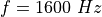
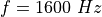
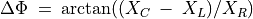
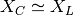

RLC circuits, steady state response¶
Objective
Study the effect of series LCR elements in an AC circuit. Three different combinations can be studied.


Procedure
- Make connections one by one, as per the drawing
- Note down the amplitude and phase measurements, in each case
- Repeat the measurements by changing the frequency.
- For RLC series circuit, the junction of L and C is monitored by A3
- For resonance select ,
 and , adjust f to
make phase shift zero
and , adjust f to
make phase shift zero - The total voltage across L and C together goes almost to zero, the voltage across them are out of phase at resonance
Discussion
The applied AC voltage is measured on A1 and the voltage across the resistor on A2. Subtracting the instantaneous values of A2 from A1 gives the combined voltage across the inductor and capacitor. We need to use an inductor with negligible resistance for good results. The phase difference between current and voltage is given by .
The total voltage, voltage across R and the voltage across LC are shown
in figure. The phasor diagram shows the phase angle between the current
and the voltage. The inductance used in this experiment is around  ,
having a resistance of .
,
having a resistance of .
At ,  and the voltage across LC is decided by the resistance of the inductor. At the resonant frequency, the voltage drop across LC will be minimum, decided by the resistance of the inductor. The input A3 is connected between L and C, so that the individual voltage drop across L and C can be displayed.